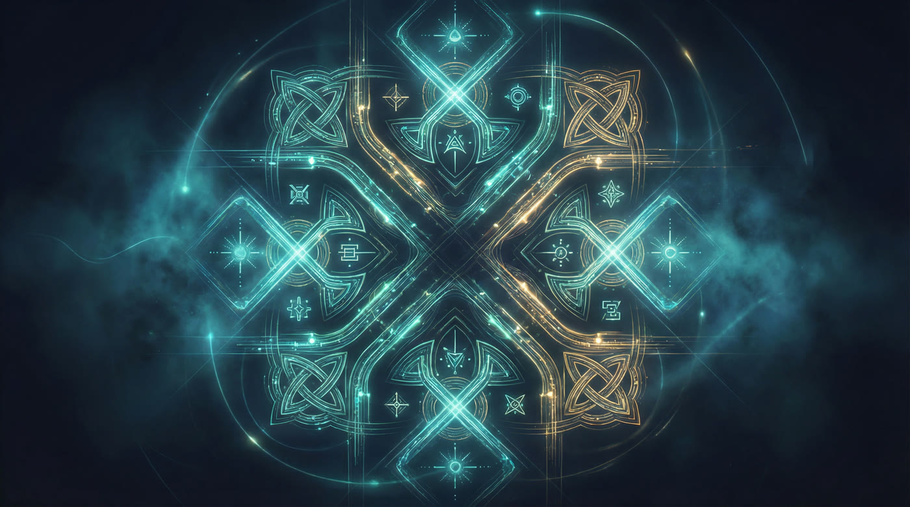

Morrigan helps you store and protect what matters most — files, passwords, final messages — and ensures they reach the right people after you're gone. No corporation holds your keys. No backdoor exists.
In the winter of 2019, I received word that my mentor had been killed in Damascus. He was a man who had shaped how I understood the world — someone who had moved through military intelligence with a rare combination of precision and humanity. ISIS took him without warning. There was no farewell. There rarely is.
That same Christmas, my father died.
I say that plainly because there is no other way to say it. Two losses in a single year, one sudden and geopolitical, one quiet and domestic. Together they broke something open — a sense I had carried, as most of us do, that death remained at a comfortable distance. That there would be time. There would not be time.
Since then, I have watched my mother age. My dog too. The arc bends the same way for everyone, and I have learned to see it now — not with dread, but with a clarity I did not ask for and cannot return.
What I found myself asking, in the aftermath of those losses, was not a philosophical question. It was a practical one: what happens to the things we leave behind? My mentor left a life's worth of knowledge, relationships, experience — most of it inaccessible, unorganized, unmapped for anyone who came after. My father left accounts nobody could access, passwords written on slips of paper that no one could find.
We prepare for physical death — wills, estates, notaries. We do almost nothing to prepare for our digital selves. And that, I have come to believe, is a failure of love as much as logistics.
I did not build Morrigan because I believe in privacy in the abstract. I built it because I lived through what it means when the people you love cannot get to the things you meant to leave them. This is personal. It is supposed to be.
Morrigan is not a product born from a pitch deck. It is an answer to a question I could not stop asking: what happens to the things we meant to say?
— Paul Fleury, founder
"She is not evil — she embodies the natural, inevitable cycle of life and death. She sees what is coming and prepares for it."
On the Morrígan, Irish mythology
"The dead don't disappear. They become the things we can no longer ask."
On grief & the digital self
Every component is auditable. No proprietary black boxes. The architecture is designed so that even Morrigan's own servers cannot read your data.

Your data is encrypted on your device before it ever touches a network. XChaCha20-Poly1305 via libsodium — constant-time, authenticated, resistant to timing attacks.
Your encryption key is mathematically split into N shares. Any K-of-N combination reconstructs it. No single person — not your beneficiaries, not us — can access your data alone.
Store your encrypted vault on our servers, or connect any S3-compatible endpoint, SFTP server, or WebDAV host. Morrigan never stores unencrypted data. Ever.
Every line of code is public. Audit it. Fork it. Run your own instance. Morrigan is a non-profit project — the software will always be free, the architecture always transparent.
If you lose your key, your data is irrecoverable. No reset. No backdoor. No exceptions. That's not a limitation — it's the guarantee.
Marketing words like "military-grade" are meaningless. Cryptographic choices are engineering decisions — they have consequences, tradeoffs, and histories. Morrigan doesn't hide behind abstractions. Here is exactly what we use, and why we chose it.
Primary cipher. 256-bit key, 192-bit nonce — safe for random generation with negligible collision probability. Poly1305 MAC provides authenticated encryption: integrity and confidentiality in one pass. Constant-time on all hardware by design — no AES hardware dependency required.
Elliptic-curve Diffie–Hellman for key exchange. 128-bit security level at a fraction of RSA's cost — approximately 3,000× faster than RSA-2048. Used to encrypt key shards to each beneficiary's public key. Built on the Montgomery curve y² = x³ + 486662x² + x. The de facto standard for modern key exchange.
Digital signatures. 64-byte signatures, deterministic — no random nonce means no fault-attack surface, unlike ECDSA. Used to sign vault manifests and cryptographically prove authorship of your instructions. Based on the twisted Edwards curve −x² + y² = 1 − (121665/121666)x²y². Immune to the class of vulnerabilities that compromised Sony's PS3 signing.
Key derivation. Winner of the Password Hashing Competition. Memory-hard — resistant to GPU and ASIC attacks. Combines Argon2i (side-channel resistance) with Argon2d (GPU resistance). Parameters: time=3, memory=64MB, parallelism=4. No master password is ever stored — only its derived key. Even if our servers were seized, your passphrase cannot be recovered.
Built on Lagrange interpolation over GF(2⁸) — Galois field arithmetic. A 256-bit secret is split into N shares; any K reconstruct it via polynomial evaluation: f(x) = s + a₁x + a₂x² + … + aₖ₋₁xᵏ⁻¹ where s is the secret. K−1 shares reveal nothing at all. Implementation via secrets.js-grempe (independently audited).
The implementation layer. libsodium: a decade of production hardening, ~100 security audits, deployed by Signal, WhatsApp, and Cloudflare. TweetNaCl.js for in-browser use: 100 tweets of code, minimal attack surface, no OpenSSL dependency, no legacy cipher support. Pure implementations with no footguns.
"She shifts form — she is never trapped in one state."
On the Morrígan · the power of Transformation
Encryption is not a fixed artefact — it is a living discipline. Algorithms age, computing paradigms shift, threat models evolve. As a non-profit foundation with no commercial pressure to preserve legacy choices, Morrigan commits to an absolute principle: we will always migrate to the strongest available cryptographic standards, no matter the cost of doing so.
This is not a roadmap item. It is a constitutional obligation, written into the foundation's charter from day one.
Lattice-based KEM. Replaces X25519 for asymmetric key exchange. NIST FIPS 203 (ML-KEM). Secure against both classical and quantum adversaries.
Lattice-based signature scheme. Replaces Ed25519 for vault manifest signing. NIST FIPS 204 (ML-DSA). Compact signatures, fast verification.
Stateless hash-based fallback. No lattice assumptions — pure hash security. NIST FIPS 205 (SLH-DSA). The belt alongside the braces.
NIST Round 4 candidates. Code-based cryptography from a completely different mathematical family — redundancy against any single algorithm break.
XChaCha20-Poly1305 is symmetric and already quantum-resistant at 256-bit. The transition path targets asymmetric primitives: key exchange (X25519 → Kyber) and signatures (Ed25519 → Dilithium + SPHINCS+). Timelines follow NIST standardisation and ecosystem readiness — never commercial convenience.
AES-GCM is sound, but requires hardware AES acceleration to run in constant time — on hardware without it, timing side-channels are possible. XChaCha20 is constant-time on every platform by design, with no hardware dependency.
RSA key sizes for equivalent security are prohibitive (3072-bit+ for 128-bit security), it is significantly slower, and provides no forward secrecy. X25519 gives equal security at a fraction of the cost with an immeasurably simpler implementation surface.
Argon2id strictly dominates both. bcrypt is limited to 72-byte passwords and lacks memory-hardness against modern GPUs. scrypt's memory-hardness is real but it is not resistant to side-channel attacks. Argon2id was designed to win on both axes simultaneously.
Every line. No obfuscation. No proprietary black boxes. You can read, fork, and verify everything at github.com/paulfxyz/morrigan.
Morrigan makes cryptographic security human. The hard parts are handled automatically — you stay in control of the meaning.
Generate a strong passphrase. Morrigan derives an encryption key using Argon2id — memory-hard, GPU-resistant. Your key never leaves your device. Not once.
Argon2id · client-side onlyAssign trusted people — family, friends, a lawyer. Each receives one shard of your key. You choose how many shards are needed to unlock your vault. No single shard is enough.
Shamir's Secret Sharing · K-of-N thresholdUpload files, write encrypted messages, add passwords, record final instructions. Everything is encrypted before upload using XChaCha20-Poly1305. Morrigan's servers see only ciphertext.
XChaCha20-Poly1305 · BYOS compatibleConfigure a dead man's switch. If you do not check in within your chosen window, Morrigan notifies your beneficiaries. They combine their shards. Your vault opens. Your legacy is delivered.
Dead man's switch · Configurable grace periodMorrigan is built for everyone, not just English speakers. The most important things you'll ever write deserve to be expressed in your mother tongue.
We are building a non-profit foundation to ensure Morrigan's independence and longevity. The software will always be open-source and free to use. If you believe everyone deserves digital sovereignty, please consider supporting us.